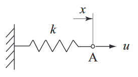
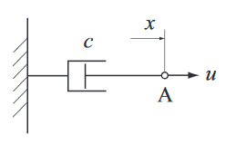

モデリング¶
静的システム¶
静的システムは、現在の出力が現在の入力のみで決まるもの。
線形ばね¶
フックの法則(変位と復元力は比例する) が成り立つばね。

ばね系([SYSCON_2009] の図 2.5 より引用)
- \(A\): 今回注目する点
- \(u\): 点 \(A\) にかかる力
- \(x\): 点 \(A\) の変位
- \(k\): ばね定数
「変位と復元力は比例する」から、 (1) が成り立つ。
(1)¶\[u = kx\]
これは (2) のように変形できる。
(2)¶\[\begin{split}\frac{u}{k} &= x\\
\frac{1}{k}u &= x\end{split}\]
(3)¶\[x = \frac{1}{k}u\]
(3) から、点 \(A\) を変位 \(x\) にとどめたければ、 変位に比例した力で引っ張らないといけないということがわかる。
動的システム¶
入力に対し、出力が微分方程式で求まるもの。例えば、出力の計算に速度(変位の微分)が必要なものは動的システム。
一次系¶
ダンパー¶
ダンパーは、速度に比例した抵抗力(粘性減衰係数)を発生する装置。 急な加減速を抑制するために使うイメージ。

ダンパー系([SYSCON_2009] の図 3.8 より引用)
- \(A\): 今回注目する点
- \(u(t)\): 時刻 \(t\) 時点での、点 \(A\) にかかる力
- \(x(t)\): 時刻 \(t\) 時点での、点 \(A\) の変位
- \(\dot{x}(t)\): 時刻 \(t\) 時点での、点 \(A\) の速度
- \(c\): 粘性減衰係数
「速度に比例する抵抗力を発生する」から、 (4) の式が成り立つ。
(4)¶\[\begin{split}u(t) = c\dot{x}(t) \\\end{split}\]
(4) を (5) の通り変形すると、 (6) の式が導ける。
(5)¶\[\begin{split}u(t) &= c\dot{x}(t) \\
\frac{u(t)}{c} &= \dot{x}(t) \\
\frac{1}{c}u(t) &= \dot{x}(t)\end{split}\]
(6)¶\[\dot{x}(t) = \frac{1}{c}u(t)\]
(6) から、目標の速度を出すためには、粘性減衰係数に負けないように頑張る必要がある事がわかる。
課題
ダンパー有り無しで変位がどう変わるかをグラフで表現する。